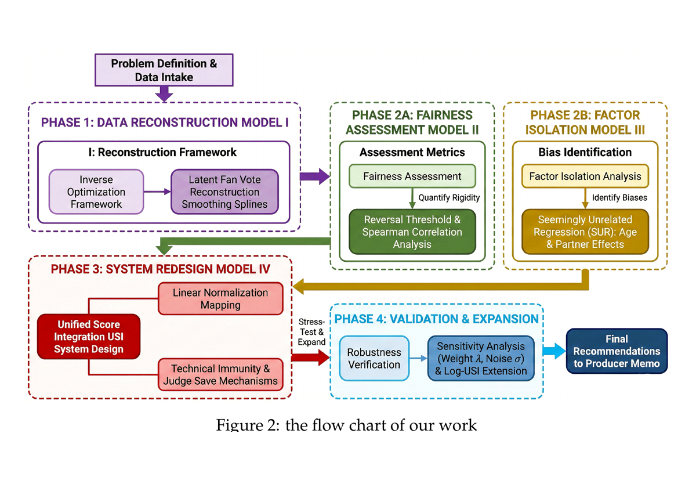
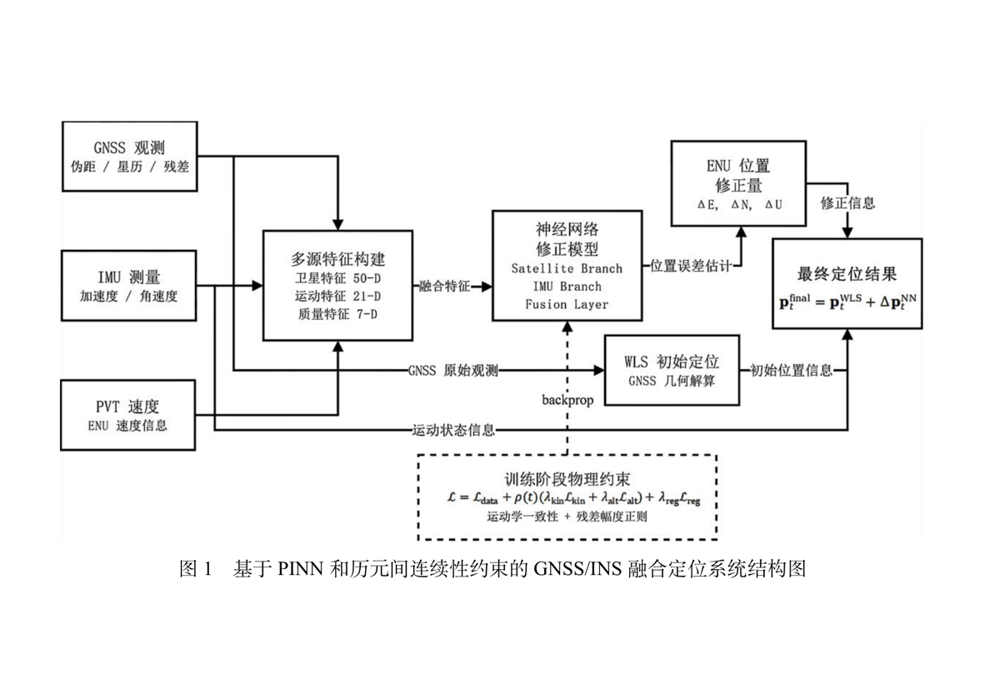
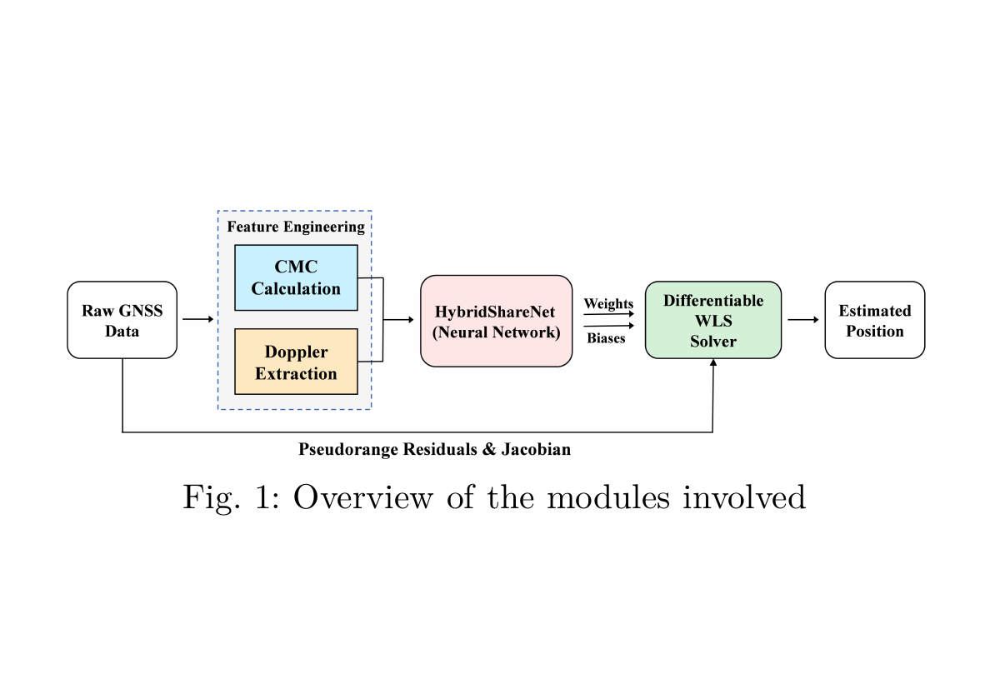
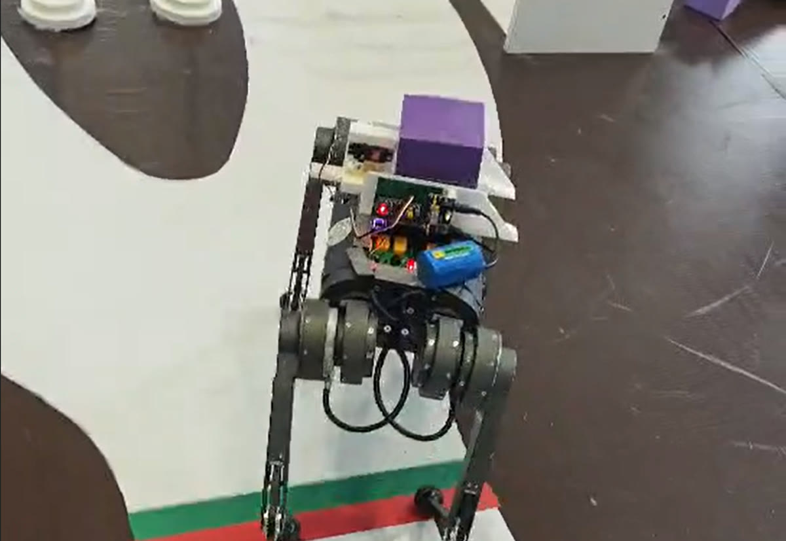
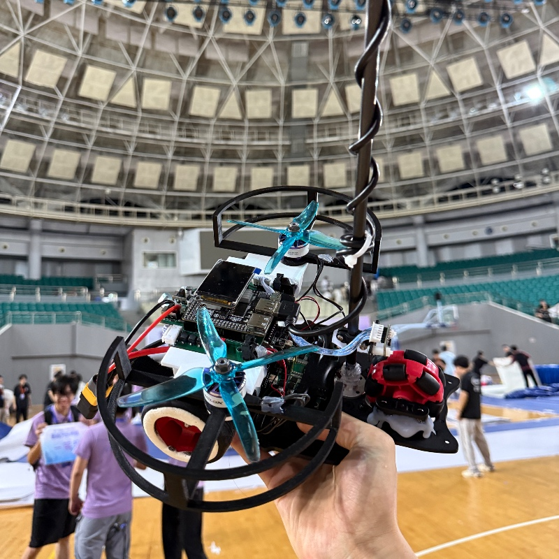
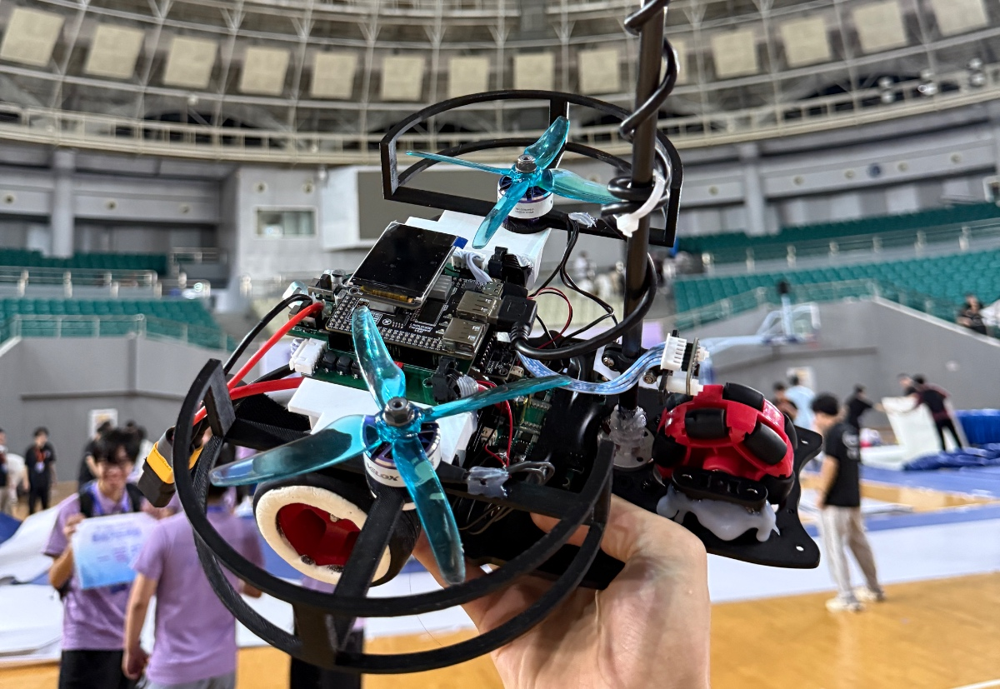
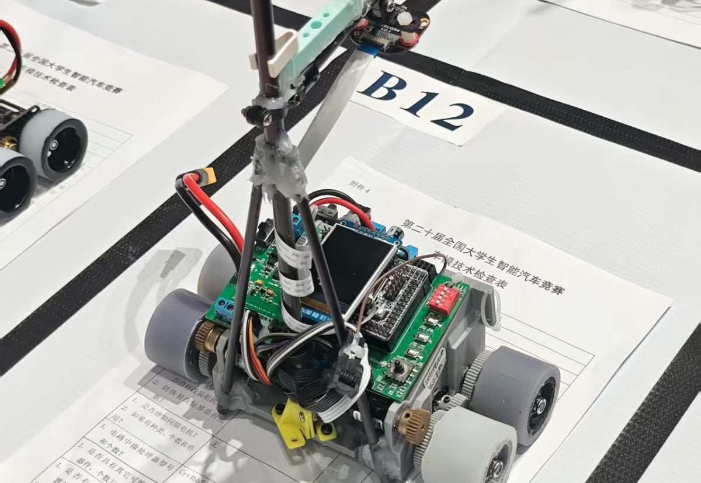
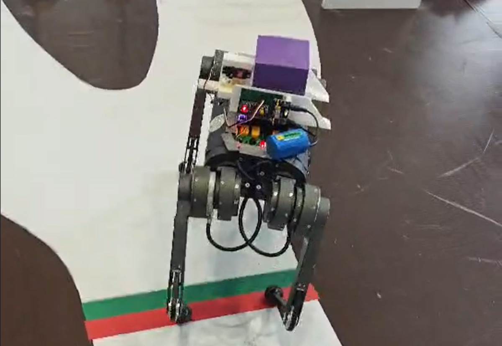

参加 2026 年美国大学生数学建模竞赛，完成 Problem C，获得 Honorable Mention。
Received an Honorable Mention in the 2026 Mathematical Contest in Modeling.
你好，我是张华睿，目前就读于浙江工业大学。
我的研究主要围绕 GNSS/INS 组合导航和深度学习定位展开。最近的工作包括融合伪距、载波相位和多普勒观测的定位方法，以及引入物理约束的 GNSS/INS 模型。
除算法研究外，我也参加智能车和中国机器人大赛暨 RoboCup 中国赛，主要负责嵌入式控制、PCB 设计、机械结构和整车调试。
Hi! I am Huarui Zhang, an undergraduate at Zhejiang University of Technology.
My research focuses on GNSS/INS integration and learning-based positioning. My recent work includes fusing pseudorange, carrier phase, and Doppler observations, and adding physical constraints to GNSS/INS models.
I also compete in intelligent car competitions and the China Robot Competition and RoboCup China Open, working on embedded control, PCB design, mechanical design, and vehicle testing.

参加 2026 年美国大学生数学建模竞赛，完成 Problem C，获得 Honorable Mention。
Received an Honorable Mention in the 2026 Mathematical Contest in Modeling.

完成基于物理信息神经网络的 GNSS/INS 组合导航研究。
Completed a physics-informed study of GNSS/INS integration.

以第一作者身份在 IEEE UPINLBS 发表深度学习定位工作。
Published first-author work on deep learning positioning at IEEE UPINLBS.

参加中国机器人大赛暨 RoboCup 中国赛，完成机器狗和背筐弹射装置的结构、控制与 PCB 制作。
Competed in the China Robot Competition and RoboCup China Open, working on the robot, launcher, control, and PCB.

完成走马观碑智能车的主板、驱动板和整车调试，实测速度约 2.7 m/s。
Completed the main board, driver board, and vehicle testing for the Zou Ma Guan Bei intelligent car, reaching about 2.7 m/s.
进入浙江工业大学学习，开始本科阶段的研究与工程实践。
Started undergraduate study and research at Zhejiang University of Technology.
IEEE UPINLBS 2025 · First author
这项工作把伪距、载波相位和多普勒观测放入同一定位框架，并使用 PyTorch 与 pyrtklib 完成训练和评估。在约 2.5 km 的数据上，二维和三维平均误差相比 PSR+CP 基线分别下降 59.5% 和 36.6%。
This work combines pseudorange, carrier phase, and Doppler observations in one positioning framework. On a 2.5 km sequence, it reduced mean 2D and 3D errors by 59.5% and 36.6% against the PSR+CP baseline.
TLDR 多普勒观测为长序列定位补充了稳定的速度信息。
2026 · First author
我把组合导航中的物理约束加入网络训练，并使用 78 维卫星与 IMU 特征预测导航状态。在 GVINS urban driving 数据上，三维 RMSE 从 36.03 m 降至 13.09 m。
I incorporated navigation constraints into network training and used 78-dimensional satellite and IMU features to estimate navigation states. On the GVINS urban driving sequence, 3D RMSE dropped from 36.03 m to 13.09 m.
TLDR 物理约束减少了观测条件变化时的模型偏移。

2026
我负责主控板与驱动板、嵌入式程序和整车调试。设计中重新处理了重心、散热和走线，整车实测速度约为 2.7 m/s。
I worked on the main board, driver board, embedded software, and vehicle testing. The car was revised for center of gravity, cooling, and wiring, and reached approximately 2.7 m/s.
TLDR 从板卡设计到整车调试，工作贯穿完整备赛过程。

2025
我参与主控、驱动和 SD 模块的原理图与 PCB Layout，并配合完成车模减重和 PWM 控制验证。整车减重约 100 g。
I worked on schematics and PCB layout for the controller, motor driver, and SD module, and helped verify weight reduction and PWM control. The car was lightened by approximately 100 g.
TLDR 减重、电路和控制需要放在整车上一起验证。

Nov, 2024
我使用 SolidWorks 完成背筐弹射装置的结构设计，以 STM32F103C8T6 为核心完成原理图、PCB Layout 和串口通信程序，并参与机器狗整机调试。
I designed the basket launcher in SolidWorks, built the schematic, PCB layout, and serial communication code around an STM32F103C8T6, and participated in robot testing.
TLDR 结构、电路和控制都围绕实际比赛动作展开。
Mathematical Contest in Modeling · Honorable Mention
团队完成了模型建立、数据分析、图表和论文撰写。我负责部分建模与计算，并使用 SUR、USI/Log-USI 和 10,000 次 Monte Carlo 模拟检验结果。
Our team completed the modeling, analysis, figures, and paper. I contributed to the model and computation, including SUR, USI/Log-USI, and 10,000 Monte Carlo runs.
本科在读 · 2024—2028
CET-6 565 · CET-4 559Python · PyTorch · pyrtklib · MATLAB
GNSS / INS · Deep LearningSTM32 · STC32 · Altium · SolidWorks
C / C++ · PCB Layout · 3D CADLaTeX · BibTeX · Git
Research writing · Reproducible workflows